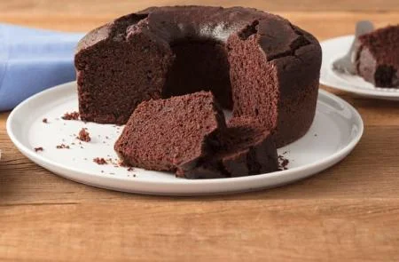

Bolo de Chocolate Simples
Ingredientes
- xícaras (chá) de farinha de trigo
- 1 e meia xícara (chá) de açúcar
- 1 xícara (chá) de Chocolate em Pó NESTLÉ® DOIS FRADES®
- 1 colher (sopa) de fermento em pó
- meia colher (chá) de bicarbonato de sódio
- 1 xícara (chá) de óleo
- 3 ovos
- 2 xícaras (chá) de água fervente
Modo de Preparo
- Em um recipiente, misture a farinha de trigo, o açúcar, o Chocolate em Pó DOIS FRADES, o fermento e o bicarbonato peneirados.
- Junte o óleo, os ovos e a água fervente, misturando bem.
- Despeje a massa em uma forma de furo central (24 cm de diâmetro) untada com óleo e polvilhada com farinha de trigo, e leve ao forno médio (180°C), preaquecido, por 40 minutos.
Dicas
- Um segredo para o bolo não ficar solado é a quantidade correta de ingredientes. Por isso, é sempre importante usar colheres e xícaras medidas, principalmente no preparo de receitas doces. Além disso, não abra o forno antes de pelo menos 30 minutos para que não interrompa o crescimento da massa. Assim você evita que o bolo fique embatumado ou massudo.
- Para o Bolo não solar a dica é pré-aquecer o forno antes de começar a fazer a receita e sempre deixar a temperatura indicada no modo de preparo, pois a temperatura muito alta assa a superfície do bolo, impedindo que ele cresça. Outra dica importante é não bater a massa demais... Mexer apenas o suficiente para que os ingredientes estejam incorporados. E para o bolo não murchar, não abrir o forno nos primeiros 20 minutos (pelo menos).
- Para o crescimento igual do seu Bolo de Chocolate, o fogo do forno deve estar regulado, pode acontecer de ter um lado mais forte que outro e isso faz com que seu bolo cresça desigual. Outro problema pode ser a grade que pode estar colocada errada (torta) ou o fogão estar desnivelado.
- Não desenforme seu bolo ainda quente. O bolo deve ser desenformado morno, com muito cuidado para não quebrar. Se deixar esfriar totalmente, ele gruda e fica difícil desenformar. Nesse caso, caso isso aconteça, pode passar a base da assadeira por água quente ou passar rapidinho pela boca do fogão para ajudar a soltar.
- Para que o Bolo de Chocolate não fique úmido e cru ele deve ficar tempo suficiente no forno. Uma dica que sempre funciona, é espetar um palito no meio da massa tirar para ter certeza que assou por inteiro. Sabemos que podem haver diferenças de temperatura de forno para forno.